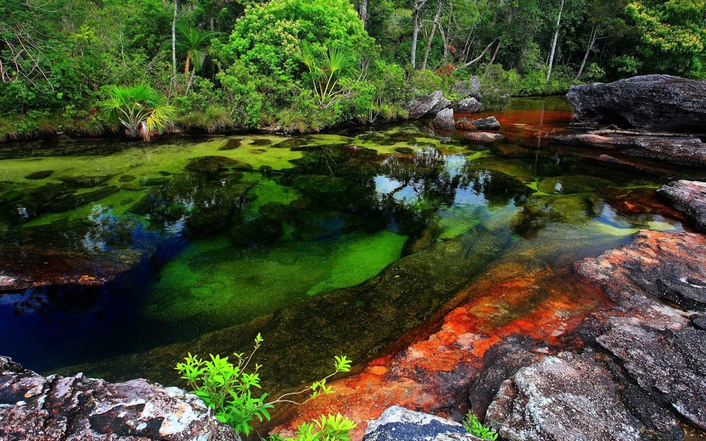

Vive Colombia, viaja por ella.


Caño Cristales: el río mas hermoso del mundo

Muy cerca del municipio de La Macarena, en el departamento del Meta (Colombia), se encuentra el que hoy por hoy es considerado por muchos como el “Río más hermoso del mundo”: Caño Cristales. También es conocido por el nombre del “Río de los cinco colores” (amarillo, azul, verde, rojo y negro), pues en sus aguas transparentes y puras se dejan ver plantas acuáticas, la arena y las hermosas formaciones rocosas de su lecho.
No es un río muy ancho ni caudaloso, por eso los lugareños le llaman “Caño”. Realmente no sobrepasa en su parte más ancha los 20 metros. Su longitud no va más allá de los 100 kilómetros. Su nacimiento se produce en la meseta sur de la Serranía de La Macarena, en el Meta.
Incluso, fue llamado «el río que se escapó del paraíso», por Andrés Hurtado, un autor colombiano. Amarillo, azul, verde, negro y rojo, son sus cinco colores escandalosos, que se explican por la presencia plantas acuáticas que según su exposición a la luz solar son de diferentes colores. Un poeta le llamó «el arco iris que se derritió»
Perfil del Autor
Apasionada por la geografía colombiana. Paisajes, climas, momentos, kilómetros, experiencias, son el único recuerdo que siempre estará presente.